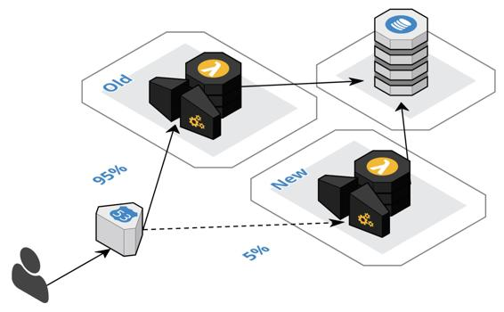

Canary deployment
The canary deployment approach improves on the blue-green approach by routing only a portion of users to the new version, as shown in the following diagram, to ensure it is working properly before switching over all the traffic. The name comes from the mining practice of bringing a canary into the mine because the bird is more susceptible to toxic fumes and would provide an early warning sign to the miners when the bird stopped singing.

From an infrastructure standpoint, a canary deployment looks pretty much the same as the blue-green deployment. The major difference is with the database. Both the old and the new version of the components are used simultaneously. Therefore, it is not usually feasible to have two versions of the database running concurrently and keeping them in sync, to support rolling back to the previous version if the canary test fails. The same case can be made for blue-green deployments, which assumes a conversion prior to the switch in either direction.
Database versioning and versioning in general are important enough that we will cover the topic in its own section shortly. There is still room for improving the zero-downtime deployment approach and account for regional failover as well.